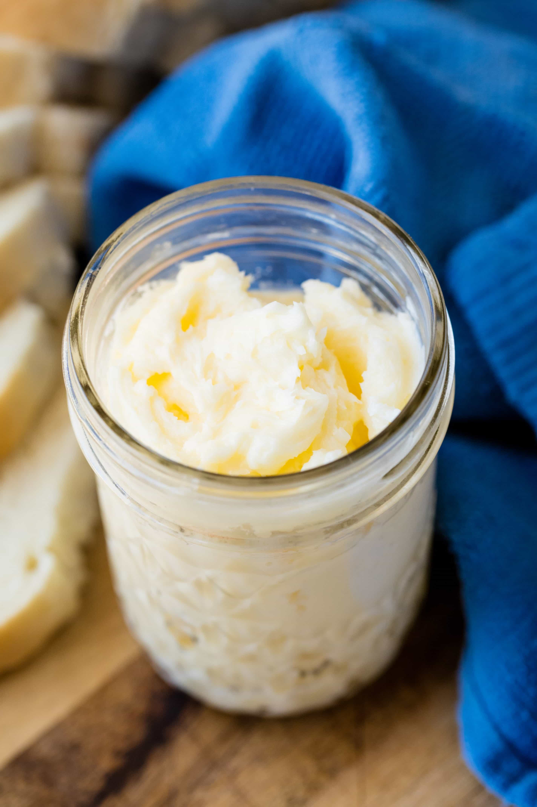

Homemade Butter

Description
After I perfected my muffin recipe, I decided that the best complement to that would be some homemade butter. It's simple, fun, and probably burns a few calories.
Ingredients
- 1 cup fresh heavy whipping cream
- pinch of salt
- some cheese cloth
Steps
- Pour cream into a large mason jar, ensuring the cream doesn't take up more than a third of the jar.
- Add the salt to the jar and seal it.
- Vigorously shake the jar for roughly 5-10 minutes until the fat separates.
- Pour jar contents into some cheese cloth to drain the buttermilk from the lump of butter.
- Rinse the lump of butter with cold water and put it in a jar or butter dish. Enjoy!